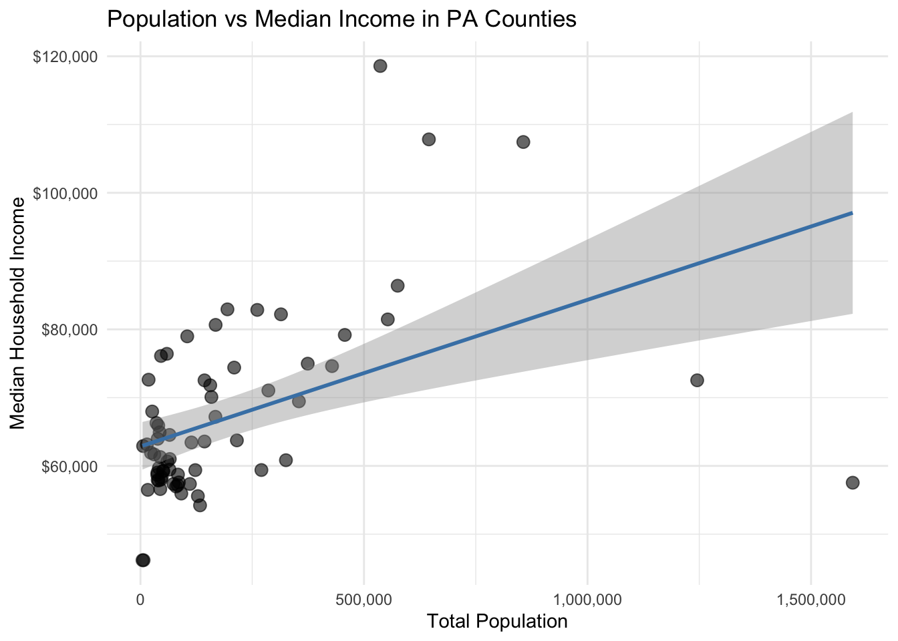
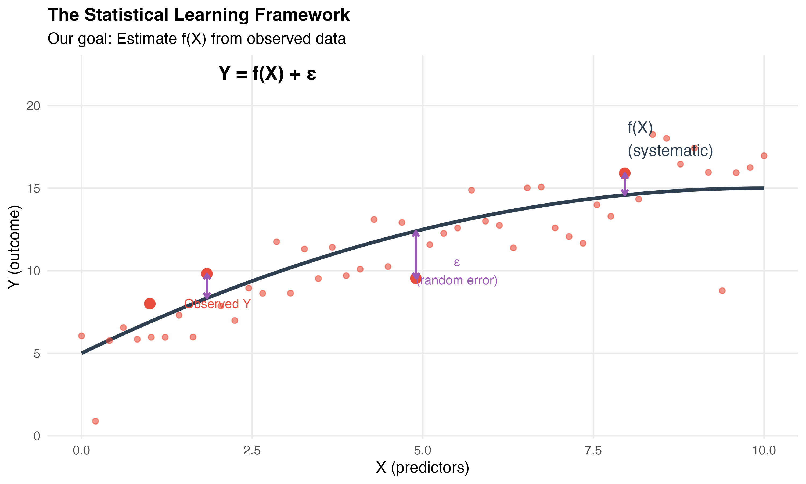
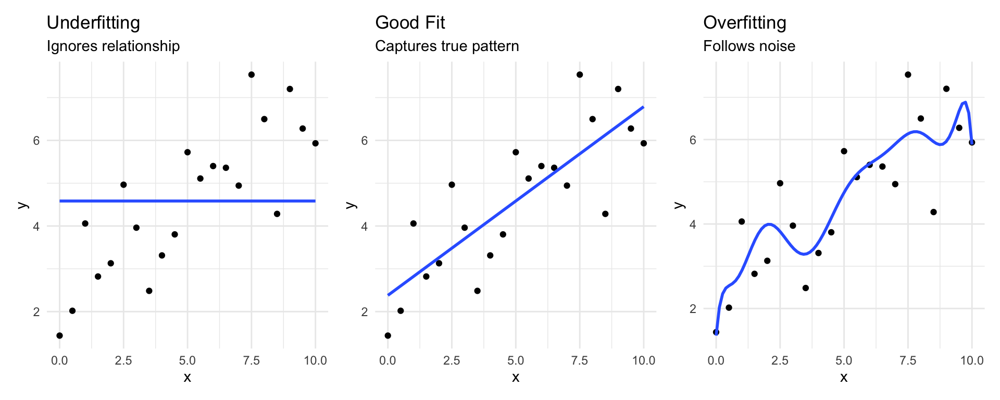
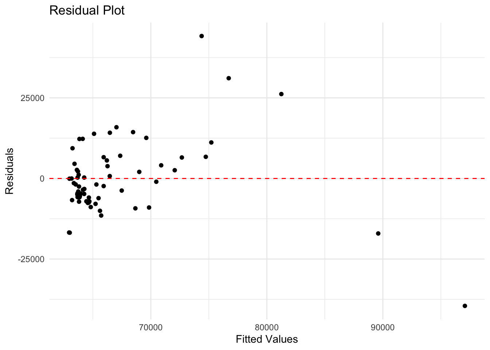
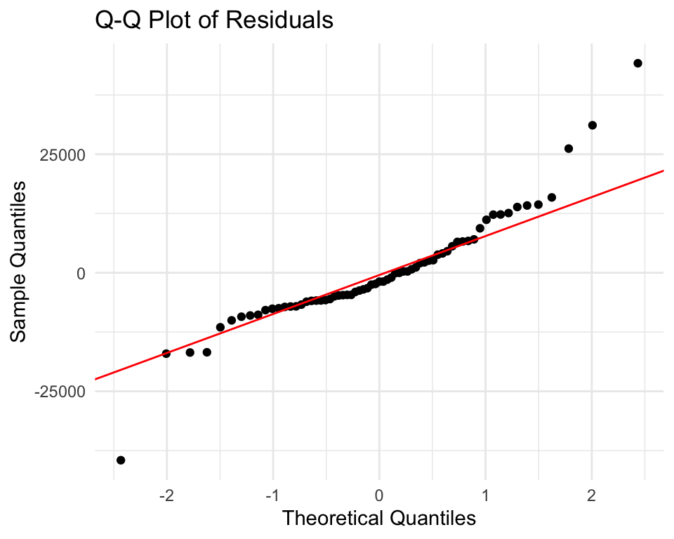
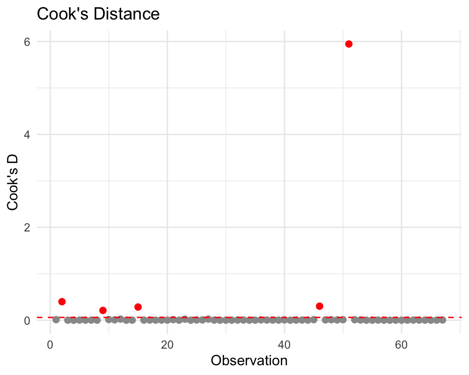

Getting data from the 2018-2022 5-year ACS`geom_smooth()` using formula = 'y ~ x'
1— title: “Introduction to Linear Regression” subtitle: “Week 5: CPLN 5920-MUSA 5080” author: “Dr. Allison Lassiter” date: “February 16, 2026” format: revealjs: theme: simple slide-number: true chalkboard: true code-line-numbers: true incremental: false smaller: true —
Scenario: You’re advising a state agency on resource allocation.
Some counties have sparse data. Can you predict their median income using data from counties with better measurements?
Broader question: How do we make informed predictions when we don’t have complete information?
We observe data: counties, income, population, education, etc.
We believe there’s some relationship between these variables.
Statistical learning = a set of approaches for estimating that relationship

For any quantitative response Y and predictors X₁, X₂, … Xₚ:
\[Y = f(X) + \epsilon\]
Where:
f represents the true relationship between predictors and outcome
Example:
Two main reasons:
1. Prediction
2. Inference
Two broad approaches:
Parametric Methods
Non-Parametric Methods

Key difference:
Neural networks are technically parametric (millions of parameters!), but achieve flexibility through parameter quantity rather than assuming a rigid form. We won’t cover them in this course, but they follow the same Y = f(X) + ε framework.
The assumption: Relationship between X and Y is linear
\[Y \approx \beta_0 + \beta_1X_1 + \beta_2X_2 + ... + \beta_pX_p\]
The task: Estimate the β coefficients using our sample data
The method: Ordinary Least Squares (OLS)
Advantages:
Limitations:
The same model serves different purposes:
Inference
Prediction
Today: We’ll do both, but emphasize prediction
Government use case:
Census misses people in hard-to-count areas. Can we predict:
The model doesn’t explain WHY these relationships exist, but if predictions are accurate, they can be useful for policy
Research use case:
Understanding gentrification:
Here we care about the coefficients and what they tell us about mechanisms
Remember the healthcare algorithm that discriminated?
The model: Predicted healthcare needs using costs as proxy
Technically: Probably had good R², low prediction error (good “fit”)
Ethically: Learned and amplified existing discrimination
A model can be statistically “good” while being ethically terrible for decision-making.
Let’s apply these concepts to PA counties:
Getting data from the 2018-2022 5-year ACS`geom_smooth()` using formula = 'y ~ x'
Before fitting any model, discuss the visualization:
Question: What does this tell us about f(X)?
model1 <- lm(median_incomeE ~ total_popE, data = pa_data)
summary(model1)
Call:
lm(formula = median_incomeE ~ total_popE, data = pa_data)
Residuals:
Min 1Q Median 3Q Max
-39536 -6013 -1868 5075 44196
Coefficients:
Estimate Std. Error t value Pr(>|t|)
(Intercept) 62855.819808 1760.477709 35.704 < 0.0000000000000002 ***
total_popE 0.021477 0.005192 4.137 0.000103 ***
---
Signif. codes: 0 '***' 0.001 '**' 0.01 '*' 0.05 '.' 0.1 ' ' 1
Residual standard error: 11820 on 65 degrees of freedom
Multiple R-squared: 0.2084, Adjusted R-squared: 0.1962
F-statistic: 17.11 on 1 and 65 DF, p-value: 0.0001032Intercept (β₀) = $62,855
Slope (β₁) = $0.02
Is this relationship real?
Our estimates are just that: estimates of the true (unknown) parameters
Key insight:

The logic:
t-statistic: How many standard errors away from 0?
p-value: Probability of seeing our estimate if H₀ is true
Two key questions:
These are NOT the same thing!
R² = 0.208
“21% of variation in income is explained by population”
Is this good?
R² alone doesn’t tell us if the model is trustworthy
Three scenarios:
`geom_smooth()` using formula = 'y ~ x'
The danger: High R² doesn’t mean good predictions!
Solution: Hold out some data to test predictions
set.seed(123)
n <- nrow(pa_data)
# 70% training, 30% testing
train_indices <- sample(1:n, size = 0.7 * n)
train_data <- pa_data[train_indices, ]
test_data <- pa_data[-train_indices, ]
# Fit on training data only
model_train <- lm(median_incomeE ~ total_popE, data = train_data)
# Predict on test data
test_predictions <- predict(model_train, newdata = test_data)# Calculate prediction error (RMSE)
rmse_test <- sqrt(mean((test_data$median_incomeE - test_predictions)^2))
rmse_train <- summary(model_train)$sigma
cat("Training RMSE:", round(rmse_train, 0), "\n")Training RMSE: 12893 cat("Test RMSE:", round(rmse_test, 0), "\n")Test RMSE: 9536 On new data (test set), our predictions are off by ~$9,500 on average. Is this level of error acceptable for policy decisions?
Better approach: Multiple train/test splits

Gives more stable estimate of true prediction performance
library(caret)Loading required package: lattice
Attaching package: 'caret'The following object is masked from 'package:purrr':
lift# 10-fold cross-validation
train_control <- trainControl(method = "cv", number = 10)
cv_model <- train(median_incomeE ~ total_popE,
data = pa_data,
method = "lm",
trControl = train_control)
cv_model$results intercept RMSE Rsquared MAE RMSESD RsquaredSD MAESD
1 TRUE 12577.76 0.5643826 8859.865 5609.002 0.2997098 2238.042Key Metrics (Averaged Across 10 Folds)
Linear regression makes assumptions. If violated:
We must check diagnostics before trusting any model
What we assume: Relationship is actually linear
How to check: Residual plot
pa_data$residuals <- residuals(model1)
pa_data$fitted <- fitted(model1)
ggplot(pa_data, aes(x = fitted, y = residuals)) +
geom_point() +
geom_hline(yintercept = 0, color = "red", linetype = "dashed") +
labs(title = "Residual Plot", x = "Fitted Values", y = "Residuals") +
theme_minimal()
Good
Bad
Linearity violations hurt predictions, not just inference:
Heteroscedasticity: Variance changes across X
Impact: Standard errors are wrong → p-values misleading
Often a symptom of model misspecification:
Example: Population alone predicts income well in rural counties, but large urban counties need additional variables (education, industry) to predict accurately.

Key Insight: Adding the right predictor can fix heteroscedasticity
library(lmtest)Loading required package: zoo
Attaching package: 'zoo'The following objects are masked from 'package:base':
as.Date, as.Date.numericbptest(model1)
studentized Breusch-Pagan test
data: model1
BP = 27.481, df = 1, p-value = 0.0000001587Interpretation:
If detected, solutions:
log(income))What we assume: Residuals are normally distributed
Why it matters:

For multiple regression: Predictors shouldn’t be too correlated
library(car)
vif(model1) # Variance Inflation Factor
# Rule of thumb: VIF > 10 suggests problems
# Not relevant with only 1 predictor!Why it matters: Coefficients become unstable, hard to interpret
Not all outliers are problems - only those with high leverage AND large residuals

# A tibble: 2 × 4
NAME total_popE median_incomeE cooks_d
<chr> <dbl> <dbl> <dbl>
1 Philadelphia County, Pennsylvania 1593208 57537 5.95
2 Allegheny County, Pennsylvania 1245310 72537 0.399Interpretation:
For policy: An influential county might need special attention, not exclusion!
High-influence observations in demographic could represent marginalized communities or unique populations. Automatically removing them can erase important populations from analysis and lead to biased policy decisions.
Always investigate before removing!
Maybe population alone isn’t enough:
Getting data from the 2018-2022 5-year ACS
Call:
lm(formula = median_incomeE ~ total_popE + percent_collegeE +
poverty_rateE, data = pa_data_full)
Residuals:
Min 1Q Median 3Q Max
-32939 -4473 -1098 3861 27672
Coefficients:
Estimate Std. Error t value Pr(>|t|)
(Intercept) 60893.86796 1589.24122 38.316 < 0.0000000000000002 ***
total_popE 0.06657 0.03356 1.984 0.0517 .
percent_collegeE 0.04710 0.14916 0.316 0.7532
poverty_rateE -0.36503 0.07749 -4.711 0.000014 ***
---
Signif. codes: 0 '***' 0.001 '**' 0.01 '*' 0.05 '.' 0.1 ' ' 1
Residual standard error: 8610 on 63 degrees of freedom
Multiple R-squared: 0.5931, Adjusted R-squared: 0.5738
F-statistic: 30.61 on 3 and 63 DF, p-value: 0.000000000002485If relationship is curved, try transforming:
# Compare linear vs log
model_linear <- lm(median_incomeE ~ total_popE, data = pa_data)
model_log <- lm(median_incomeE ~ log(total_popE), data = pa_data)
summary(model_log)
Call:
lm(formula = median_incomeE ~ log(total_popE), data = pa_data)
Residuals:
Min 1Q Median 3Q Max
-27231 -5780 -2118 3953 40638
Coefficients:
Estimate Std. Error t value Pr(>|t|)
(Intercept) -4867 12374 -0.393 0.695
log(total_popE) 6276 1074 5.842 0.00000018 ***
---
Signif. codes: 0 '***' 0.001 '**' 0.01 '*' 0.05 '.' 0.1 ' ' 1
Residual standard error: 10760 on 65 degrees of freedom
Multiple R-squared: 0.3443, Adjusted R-squared: 0.3342
F-statistic: 34.13 on 1 and 65 DF, p-value: 0.0000001805# Check which residual plot looks betterInterpretation changes: Log models show percentage relationships
# Create metro/non-metro indicator
pa_data <- pa_data %>%
mutate(metro = ifelse(total_popE > 500000, 1, 0))
model3 <- lm(median_incomeE ~ total_popE + metro, data = pa_data)
summary(model3)
Call:
lm(formula = median_incomeE ~ total_popE + metro, data = pa_data)
Residuals:
Min 1Q Median 3Q Max
-28824 -6732 -2885 7672 26622
Coefficients:
Estimate Std. Error t value Pr(>|t|)
(Intercept) 64924.857892 1659.821786 39.116 < 0.0000000000000002 ***
total_popE -0.005290 0.008047 -0.657 0.513257
metro 29865.529225 7319.309190 4.080 0.000127 ***
---
Signif. codes: 0 '***' 0.001 '**' 0.01 '*' 0.05 '.' 0.1 ' ' 1
Residual standard error: 10610 on 64 degrees of freedom
Multiple R-squared: 0.3718, Adjusted R-squared: 0.3522
F-statistic: 18.94 on 2 and 64 DF, p-value: 0.0000003456R creates dummy variables automatically
Statistical Learning:
Two purposes:
Model evaluation:
Diagnostics matter:
Best Predictive Model Competition
Predict median home value (B25077_001) for PA counties using any combination of predictors
Build the model with lowest 10-fold cross-validated RMSE
challenge_data <- get_acs(
geography = "county",
state = "PA",
variables = c(
home_value = "B25077_001", # YOUR TARGET
total_pop = "B01003_001", # Total population
median_income = "B19013_001", # Median household income
median_age = "B01002_001", # Median age
percent_college = "B15003_022", # Bachelor's degree or higher
median_rent = "B25058_001", # Median rent
poverty_rate = "B17001_002" # Population in poverty
),
year = 2022,
output = "wide"
)
ggplot(challenge_data, aes(x = home_valueE, y = median_incomeE)) +
geom_point(alpha = 0.6, size = 3) +
geom_smooth(method = "lm", se = TRUE, color = "steelblue") +
labs(
title = "Population vs Median Income in PA Counties",
x = "Total Population",
y = "Median Household Income"
) +
scale_x_continuous(labels = comma) +
scale_y_continuous(labels = dollar) +
theme_minimal()
my_model1 <- lm(home_valueE ~ median_incomeE, data = challenge_data)
summary(my_model1)
##Residuals
challenge_data$residuals <- residuals(my_model1)
challenge_data$fitted <- fitted(my_model1)
ggplot(challenge_data, aes(x = fitted, y = residuals)) +
geom_point() +
geom_hline(yintercept = 0, color = "red", linetype = "dashed") +
labs(title = "Residual Plot", x = "Fitted Values", y = "Residuals") +
theme_minimal()
my_train_control <- trainControl(method = "cv", number = 10)
my_cv_model <- train(home_valueE ~ median_incomeE,
data = challenge_data,
method = "lm",
trControl = train_control)
my_cv_model$results
summary(my_cv_model)
my_model_linear <- lm(home_valueE ~ median_incomeE, data = challenge_data)
summary(my_model_linear)
my_model_log <- lm(home_valueE ~ log(median_incomeE), data = challenge_data)
summary(my_model_log)
model2 <- lm(home_valueE ~ median_incomeE , data = challenge_data)You can:
log(total_popE)You must:
na.omit(challenge_data)